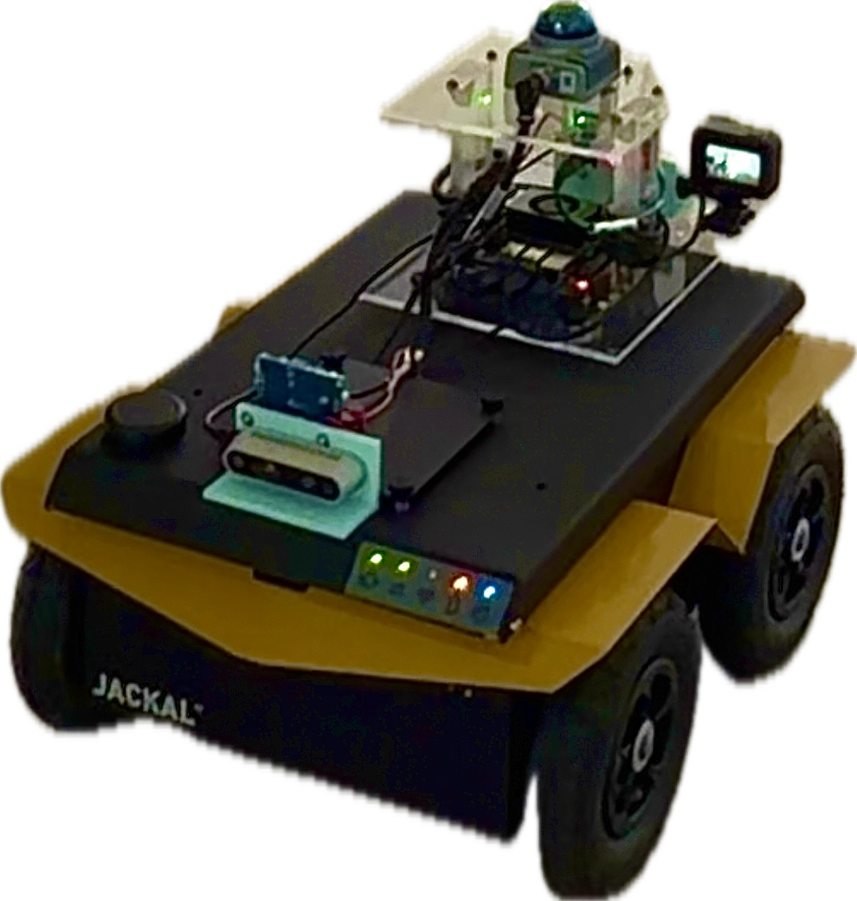
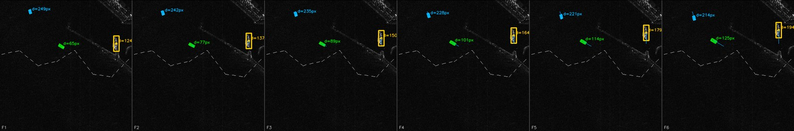

About

_
Undergraduate Student
Undergraduate student in Electronic Engineering at Jeonbuk National University, currently completing a convergence major in Advanced Defense Technology and Industry. Interested in physical AI and defense technology, with current research on the security and robustness of cooperative drone swarms, and on onboard AI agents for UAV autonomy.
Contact : yp1278kr@jbnu.ac.kr · Google Scholar · GitHub
More about me →Career
- 2026.07 – 2026.08 Summer Research Intern, EnSeption Team Electronics and Telecommunications Research Institute (ETRI) Advisor: Hanvit Kim, Senior Researcher
- 2026.01 – Present Undergraduate Intern, DAS LAB (Defense Advanced Security Lab) Dept. of Advanced Defense Technology and Industry, Jeonbuk National University Advisor: Prof. Joon Soo Yoo
- 2025 Completed Defense Program Manager Training Course, Level 3 (Weapon Systems) Defense Acquisition Program Administration (DAPA)
- 2025 Pursuing Convergence Major in Advanced Defense Technology and Industry Jeonbuk National University
- 2025 Vice President, Student Council Dept. of Electronic Engineering, Jeonbuk National University
- 2024 Team Leader, Idea Contest Hanwha Aerospace
- 2023 Completed Mandatory Military Service (Enlisted, 1278th Class) Republic of Korea Marine Corps
- 2021 Admitted to Dept. of Electronic Engineering Jeonbuk National University
Research
-
UAV Swarm Spoofing Defense
Spoofing that shifts a whole formation while every inter-drone distance holds, and recovering absolute position from a few references that do not come from GNSS.
-
Swarm Robustness (HW / SW)
Keeping a swarm flying when parts of it stop being trustworthy — sensors that drift rather than fail, links that drop, and members that turn hostile.
-
Drone AI Agents
Onboard agents that judge how far to trust their own perception, and degrade gracefully instead of acting confidently on bad input.
Projects
Autonomous Landmine-Detection Robot
An autonomous exploration robot on a Clearpath Jackal UGV that surveys unknown terrain, finds AprilTag-marked mines, and drives to the densest cluster. The navigation stack — frontier exploration, A* planning, pure pursuit — was written from scratch rather than configured through Nav2.

Maritime SAR Ship-Intrusion Alert near the NLL
A radar-based watch for vessels approaching the Northern Limit Line, motivated by night coastal-guard duty where fog and darkness blind the optical sensors the watch depends on. Approach sequences were synthesized from HRSID, then read by an oriented-box detector into a five-level intrusion alert.

Publications
- Preprint · to be submitted Rigid-Covert GNSS Spoofing of UAV Swarms: A Structural Blind Spot, Its Detection Limit, and Absolute-Anchor Defenses arXiv preprint arXiv:2608.06885, 2026 View details →
- In preparation · to be submitted Estimating Gait Phase and Gait-Event Timing from Hip-Angle Sensing Alone: Feasibility and Limits on a Commercial Hip Exoskeleton Working title To be submitted, 2026 View details →
- Accepted Research Directions for LiDAR and Radar Security Based on Intervention Points in the Autonomous Driving Perception Pipeline 자율주행 인지 파이프라인의 개입 위치에 따른 LiDAR/Radar 보안 기술과 향후 연구 방향 Journal of the Korea Institute of Information Security & Cryptology (KCI), Vol. 36, No. 4, 2026 View details →